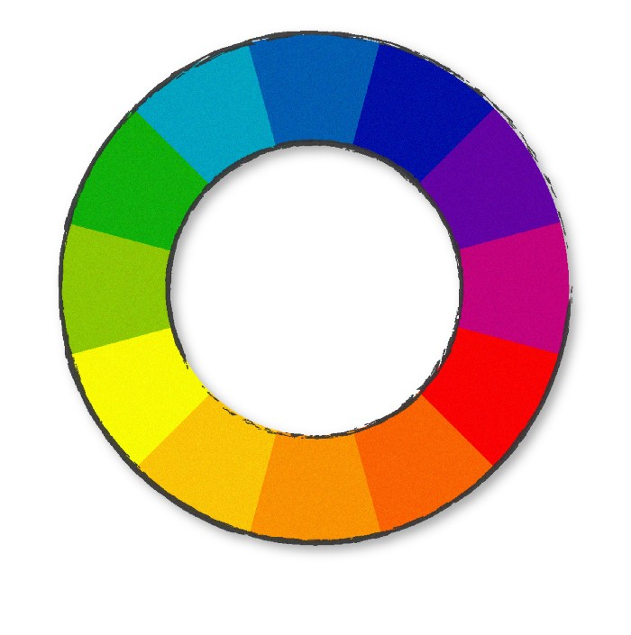
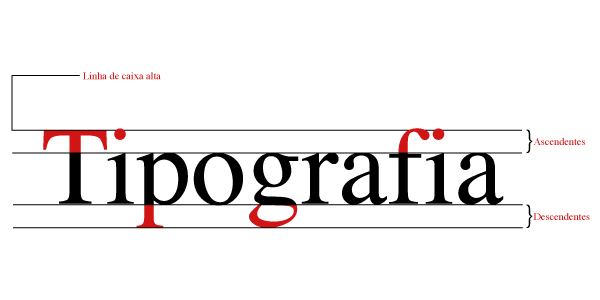

Design Digital
Teoria das Cores
teoria das cores é um conceito importantíssimo. É ele que estuda a influência de cada cor no comportamento do usuário por meio das sensações que desperta.
Ao criar uma interface, é preciso estudar a paleta de cores com cuidado. Afinal, essas escolhas influenciarão diretamente no sucesso do projeto.
O Círculo Cromático é uma representação das 12 cores que o nosso olho pode perceber e reconhecer. Ele é representado, na forma de um círculo, com as cores distribuídas perfeitamente de tal maneira que geram diversas combinações, sejam ligando cores de lados opostos, cores lado a lado, etc.
As cores complementares são aquelas que se encontram em lados opostos do círculo cromático. Sendo assim, alaranjado e azul são cores opostas, consequentemente são cores complementares. Assim como amarelo e roxo, verde e vermelho etc…
Cores Análogas São cores que se encontram lado a lado no círculo cromático. No caso abaixo, amarelo, alaranjado e alaranjado escuro são um exemplo de cores análogas. Um aspecto desta combinação é que as matizes são variações de uma cor básica em comum.
A combinação de cor complementar dividida é um pouco menos vibrante e “viva” que a combinação de cor análoga, ou complementar visto anteriormente. Ao invés de se escolher a cor complementar direta, escolhe-se as duas cores adjacentes. Ou seja, se escolhermos o alaranjado, as duas outras cores serão o azul claro à esquerda e o azul mais escuro à direita.
TipografiaTipografia significa a impressão dos tipos, sendo que tipo é a fonte, ou a letra. Atualmente, Tipografia é o nome dado ao estudo, criação e aplicação de caracteres, estilos, formatos e disposição visual de palavras.
Hoje em dia a tipografia é conhecida por ser uma ferramenta essencial do design gráfico, e tem extrema importância na construção do seu branding. Atualmente, Tipografia é o nome dado ao estudo, criação e aplicação de caracteres, estilos, formatos e disposição visual de palavras
 Logotipogrupo de letras reunidas numa só peça, empr. em tipografia, com o objetivo de acelerar o trabalho de composição manual [Este recurso tipográfico foi inventado no sXVIII em substituição aos caracteres móveis individuais e, posteriormente, aplicou-se de preferência à composição de siglas e marcas comerciais ou de fabricação, de traçado característico facilmente reconhecível.
LogomarcaConjunto formado pela representação gráfica do nome de determinada marca, em letras de traçado específico, fixo e característico (logotipo) e seu símbolo visual (figurativo ou emblemático).
GimpGIMP é um programa de código aberto voltado principalmente para criação e edição de imagens raster, e em menor escala também para desenho vetorial.